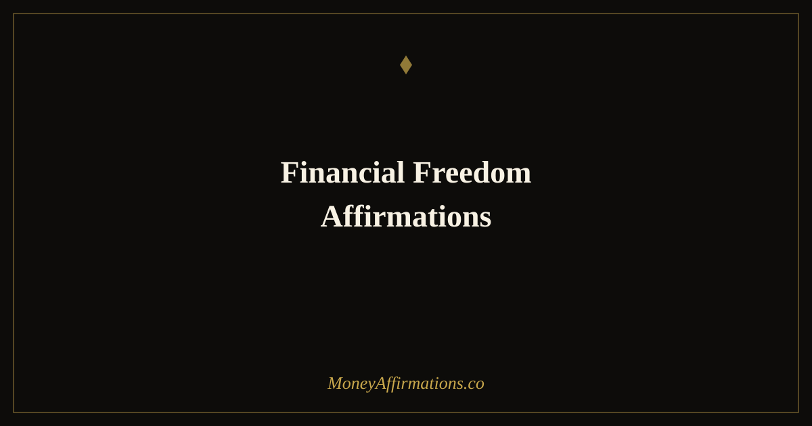

Financial Freedom Affirmations: 25 Phrases to Break Free from Debt

Debt has a way of becoming an identity. When you have been carrying financial burden for months or years, it can begin to feel like a permanent condition rather than a temporary circumstance. That feeling — of being stuck, of money always going out faster than it comes in, of freedom being something other people have — is one of the most damaging stories a person can carry. And it is a story that affirmations can begin to dismantle, one repetition at a time.
Financial freedom affirmations do not pretend the debt is not there. They do something more powerful: they establish the identity of a person who is actively moving toward freedom, who is capable of building wealth, and who deserves a life unencumbered by financial stress. That identity shift changes behavior, and changed behavior changes circumstances.
What are financial freedom affirmations?
Financial freedom affirmations are present-tense, first-person statements that anchor your sense of self to the reality of independence, sovereignty, and abundance rather than debt and limitation. They work by interrupting the internal monologue of scarcity — "I am always broke," "I will never get ahead," "debt is just part of my life" — and replacing it with a competing narrative that, with enough repetition, becomes the dominant one.
Research in cognitive behavioral psychology consistently shows that changing the language we use about ourselves changes the beliefs we hold about what is possible. Financial freedom affirmations are a daily declaration that freedom is not a distant dream but an inevitable destination — one that your current choices are steadily building toward. They cultivate patience, discipline, and the kind of motivated optimism that keeps you taking steps forward even when progress feels slow.
25 financial freedom affirmations
- I am on a clear and powerful path to complete financial freedom.
- I release all debt from my life and welcome financial independence in its place.
- My relationship with money is healing every day and I am becoming financially free.
- I am worthy of a life completely free from financial stress and worry.
- Every payment I make brings me closer to total financial freedom.
- I am building a secure, debt-free future with every smart financial choice I make.
- Money no longer controls me — I am in complete command of my finances.
- I earn more than enough to cover my needs and eliminate my debt with ease.
- I am free from financial fear and I walk through life with abundant confidence.
- My savings grow consistently and my debts shrink until they disappear completely.
- I deserve financial freedom and I am actively creating it right now.
- I am no longer defined by my past financial choices — I am defined by my future.
- I have the skills, discipline, and mindset to achieve total financial independence.
- Financial freedom is not a dream — it is my present direction and my certain destination.
- I attract the income I need to live freely and abundantly without financial strain.
- I am grateful for every step I take toward a debt-free, financially secure life.
- My finances are in order, my savings are growing, and my freedom is expanding.
- I forgive myself for past money mistakes and move forward with wisdom and clarity.
- I am financially independent and I have more than enough to live, give, and thrive.
- Money flows in consistently and I direct it wisely toward my freedom and future.
- I no longer carry the weight of debt — I am light, free, and financially empowered.
- Every day I take one step closer to the financial freedom I fully deserve.
- I am building generational wealth and a legacy of financial freedom for my family.
- My income always exceeds my expenses and I save and invest the difference with joy.
- I am financially free, fully supported, and living exactly the life I envisioned.
How to use these affirmations
When using freedom affirmations in the context of debt, it helps to combine them with an honest but compassionate relationship with your actual numbers. Do not use affirmations to avoid looking at your finances — use them to change the emotional charge you bring to that process. Fear and shame make financial avoidance almost automatic. Affirmations help you approach your budget, your statements, and your debt payoff plan from a place of agency rather than dread.
Choose five to seven of the affirmations above and practice them daily — morning is best for setting intention, evening is useful for reinforcing progress. After each session, take one small concrete action aligned with your financial freedom goal: review your spending, transfer a small amount to savings, research a debt repayment strategy, or simply decide to spend less on one thing today. The affirmation plants the seed; the action waters it.
If you feel strong emotional resistance when saying certain phrases — especially those about worthiness or forgiveness — those are the ones to lean into most. Resistance signals an old belief that needs the most attention and healing.
Tips to make them work faster
- Pair affirmations with a written freedom goal. Write down a specific date and amount — "I am debt-free by [date]" — and post it where you see it daily. Specificity gives the subconscious mind a clear target.
- Practice self-forgiveness actively. Shame about past financial mistakes is one of the biggest blockers to financial freedom. Include at least one forgiveness-themed affirmation in every session.
- Celebrate every payment. Each debt payment, no matter how small, is a freedom act. Acknowledge it consciously — say an affirmation immediately after making a payment to wire positive emotion to the experience of reducing debt.
- Track your net worth monthly. Seeing your numbers move — even slowly — provides the evidence your brain needs to believe the affirmations are working, which accelerates the belief cycle.
- Read them out loud before any significant financial decision. Before a budget review, a bill payment, or a savings transfer, ground yourself with two minutes of affirmations to ensure you are acting from abundance rather than anxiety.
Frequently Asked Questions
Is it dishonest to say "I am financially free" when I am still in debt?
It is not dishonest — it is intentional. Affirmations use present tense to establish the identity and direction you are moving toward, not to deny the current moment. Think of it as speaking from your future self: the version of you that has done the work, paid off the debt, and arrived at freedom. That voice is entirely valid to inhabit now, and doing so consistently is precisely how you close the gap between where you are and where you are going.
Can financial freedom affirmations help with the emotional side of debt?
Yes — this is actually where they are most immediately effective. The psychological burden of debt — anxiety, shame, helplessness, and avoidance — often does more financial damage than the debt itself by preventing smart action. Affirmations directly address these emotional patterns. Regular practice reduces the threat response triggered by financial topics, making it easier to look at your numbers honestly, make clear decisions, and stay motivated through the long process of debt elimination.
How do I stay consistent with affirmations when my finances are really stressful?
The highest-stress moments are exactly when affirmations are most needed — and most difficult. Try reducing the practice to just three affirmations on overwhelming days rather than abandoning it entirely. Anchor the habit to a calming routine, like deep breathing or tea-making, so the physical calm of that routine carries over into the affirmation practice. Progress over perfection: showing up even briefly is far more powerful than a sporadic but elaborate session.
For additional tools to build a wealth-positive identity from the ground up, explore the full wealth affirmations collection with statements designed for every stage of the financial journey.